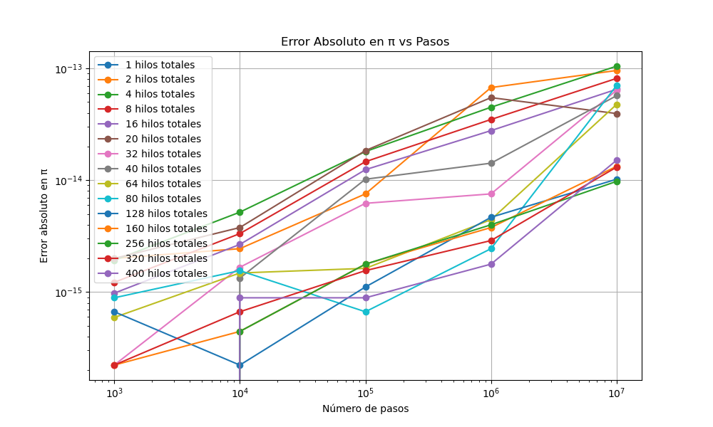

Visualización de Resultados - Secuencial con MPI + OpenMP
Error Absoluto en π vs pasos

Diferencia entre el valor estimado de π y su valor real, analizada en función del número de pasos y total de hilos.
Gráficas Speedup
Gráficas Tiempo
Volver
Volver al Inicio